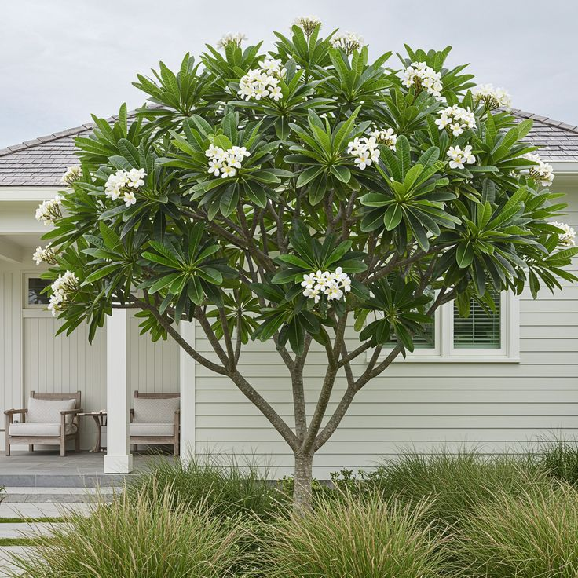
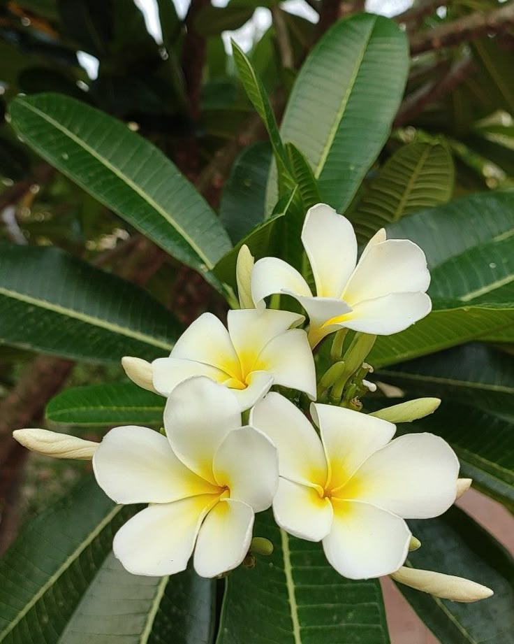
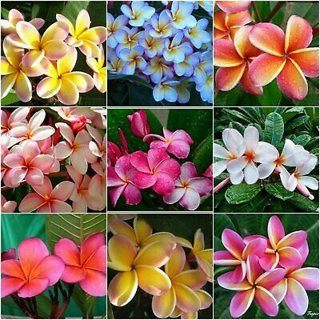
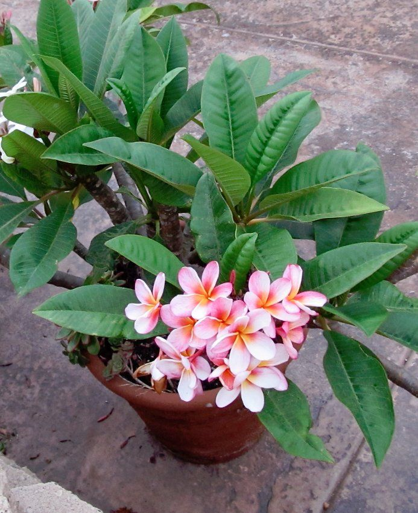
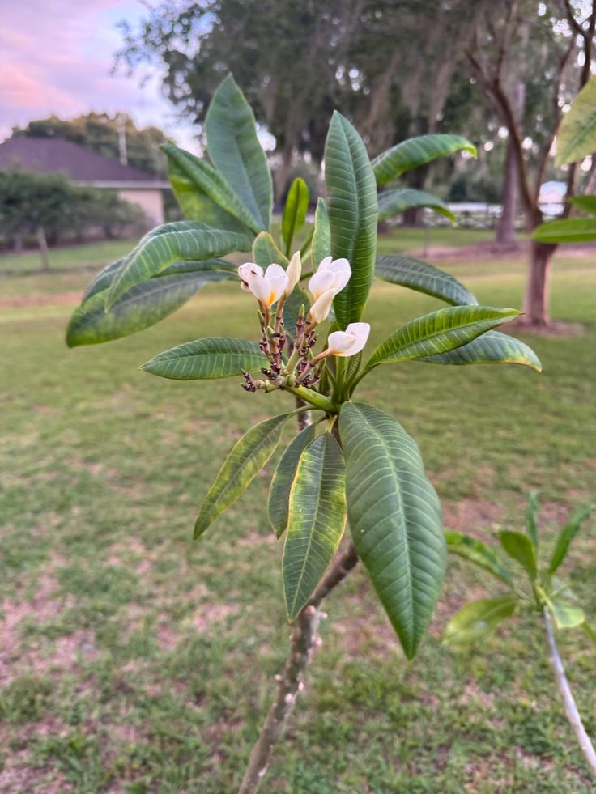

Plumeria (Frangipani)


General Information
Scientific Name: Plumeria spp.
Family: Apocynaceae
Type: Deciduous flowering shrub or small tree
Height: 6 to 25 feet tall depending on species and environment
Uses of Plumeria:
- Ornamental: Widely used for landscaping due to its fragrant and beautiful flowers.
- Religious & Cultural: Flowers used in garlands, offerings, and ceremonies in tropical cultures.
- Aesthetic: Iconic in tropical designs and spa gardens for its vibrant, waxy flowers.
Medicinal & Traditional Uses:
- Used in traditional medicine for treating skin inflammation and digestive issues.
- Latex sap is used cautiously for healing wounds, though it may be irritating.
- Some species have mild antibacterial properties.
- Warning: All parts of the plant may be mildly toxic if ingested.


Description
Plumeria, commonly called Frangipani, is a tropical plant known for its fragrant, star-shaped flowers and attractive growth form. Its thick, succulent branches bear clusters of vibrant flowers that bloom from spring to fall.
Habitat & Growth
- Native Regions: Caribbean, Central America, Mexico
- Soil: Well-draining sandy or loamy soils
- Sun: Requires full sunlight for best flowering
- Watering: Moderate watering; drought-tolerant once established

Propagation
Plumeria is most commonly propagated by stem cuttings. Cuttings are left to dry for a few days before planting in soil. It can also be grown from seeds, though hybrids may not produce true to parent traits.
Fun Facts & Cultural Significance
- Plumeria is the national flower of Nicaragua and Laos.
- In Hawaiian culture, flower placement behind the ear indicates relationship status.
- The name “Frangipani” comes from an Italian noble family who made perfume from the flower’s scent.
- Despite its beauty, it’s often planted away from homes in some cultures due to superstitions.